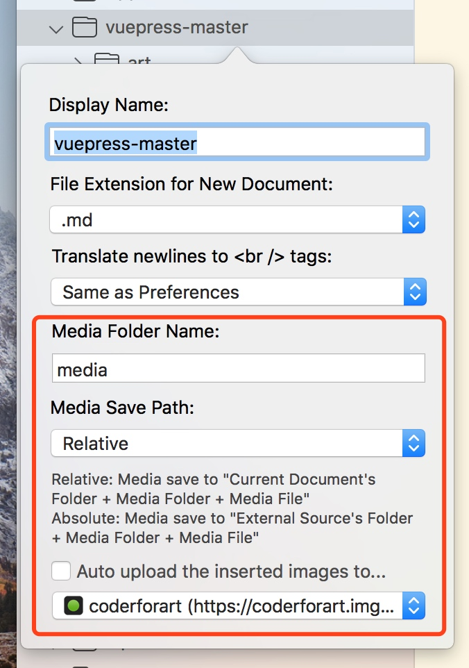
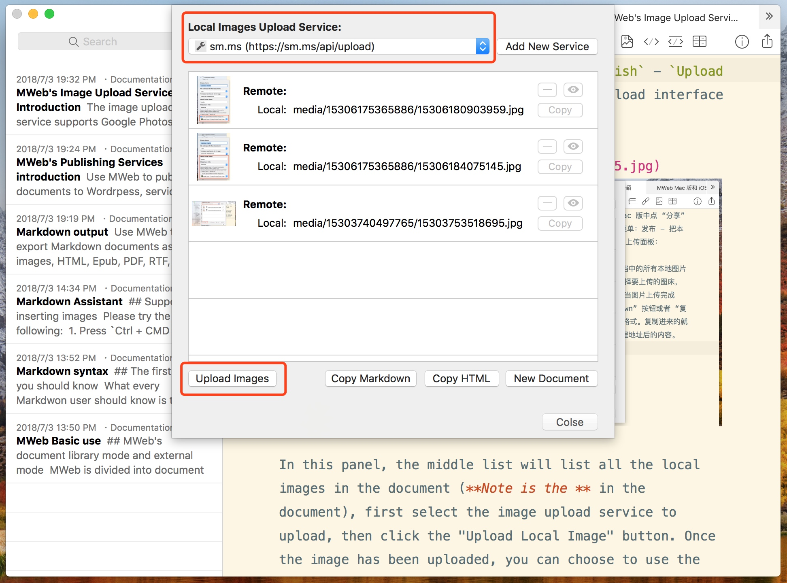

The image upload service supports Google Photos, Imgur, qiniu.com, upyun.com and Custom. There are two ways to use the image upload service in MWeb. Here are the following:
1. Automatically upload to image upload service after inserting image
This is a lot of friends like to use, but I don't recommend the way, mainly in case the image upload service is hung up or what is the problem, it is more troublesome. This method is only supported in the External Mode, the Library Mode does not support, the following describes the configuration method.
In the External Mode, the folder imported by Right Click, select Edit, then the Folder Settings interface as shown below.

Check the red box to automatically upload the inserted image to..., then select the image upload service to upload (the image upload service can be added in Preferences - Publishing). After this setting, the documents inside the folder will be automatically uploaded to the selected image upload service and return the address and generate the Markdown syntax when the image is inserted.
2. Copy the images to the relative position of the document.
This is the recommended way for MWeb. The advantage of this method is that the image is local and associated with the Markdown document. It does not cause the image to be lost. MWeb will display the local image directly in the editor, which is convenient for previewing. This method is supported by MWeb's Library Mode and External Mode. Here's how to configure it.
The Library Mode does not need to be configured. The default is like this. In the External Mode, right click the folder and select Edit, then bring up the Folder Settings interface. The configuration is as follows:

First uncheck "Automatically upload inserted pictures to". The above configuration can be used by default, which means you just uncheck the automatic upload image.
There are only two settings that can be set above, one is “Media Folder Name” and the other is “Media Save Path”. There are two settings for saving location, one is “Relative” and the other is “Absolute”.
Here is an example. For example, if the add a Folder name's "folder" to MWeb External Mode, there is have a document in the "folder/sub/sub2/sub3/doc.md", and then insert a image to that document. If it is "Absolute", the image will be saved under "fodler/media". The generated Markdown is ; and the "Relative" is saved under "folder/sub/sub2/sub3/media", and the generated Markdown is . "Absolute" This setting is actually to support Markdown documents for static blogs such as Hexo, Octpress, and Jekyll.
You can see it, that is, you don't need to configure it under normal circumstances, except for Markdown documents of static blogs such as Hexo and Jekyll, or you want to automatically upload the image to the image upload service.
Upload document's local image to the image upload service
Why is it recommended to use the second post-insertion image processing method because of this feature. It's very easy to use. Click the Share button - Upload Local Images to..., or use the menu: Publish - Upload Local Images to.... The following image upload panel can be accessed:

In this panel, the middle list will list all the local images in the document (Notice: the image is in the document), first select the image upload service to upload, then click the "Upload Images" button. Once the image has been uploaded, you can choose to use the Copy Markdown button or the Copy HTML button to see what format you need. The copied content is the content after the local image address has been replaced with the remote address of the image upload service.